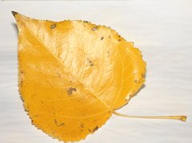

La foto se ha tomado en: Foto localizada en el banco de imágenes del CNICE
Fecha: 28-09-2005
Características:
Antes de nada pido disculpas a los botánicos por la pobreza de la descripción de la hoja... y su posible identificación errónea ya que esta página se muestra como ejemplo de la aplicación de la técnica de plantillas.
Hoja de unos 6x7 cm aproximadamente, de forma ovalado-triangular, con el ápice agudo y el borde dentado irregularmente.Identificación:
Especies similares:
Identificación realizada por: Raúl Luna utilizando información del Real Jardín Botánico Juan Carlos I de la Universidad de Alcalá de Henares